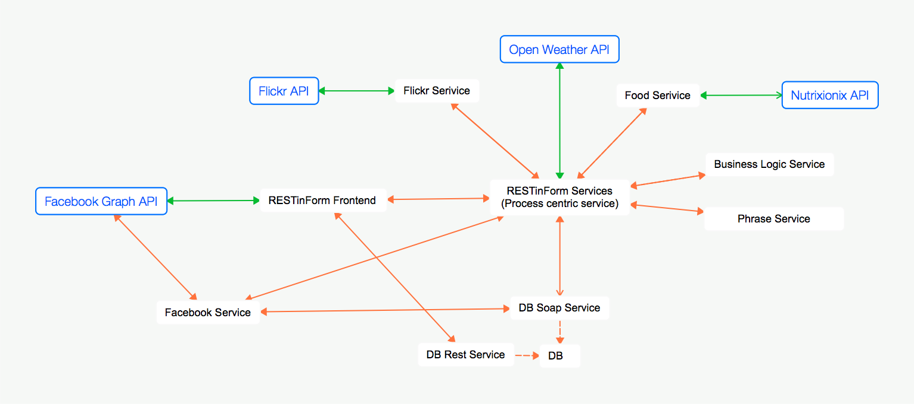

Summary
Here can be seen the map of our project. While services we developed have a black border, the external services have a blue one. The most important service is the RESTinForm Services which is actualy our Process centric service. Green arrow are requests that use API provided by external services. The red arrows represent the first process while the blue ones are part of the second process. As required each process send request to at least 3 different services. All the requests sent from/to a service are formatted in JSON. We chose this format because it is very lightweight.

The project is based on four external services:
- Facebook: we use this service in order to authenticate requests sent to our services. Each request come to our services (The Phrase Service and the Flickr Service are excluded) must has a parameter named
token. Our services ask to the Facebook Graph API if a given token is valid. In the positive case an authenticated user sent the request, otherwise no other actions are authorized.
- Flickr: the API provided by Flickr are used in order to gather images that will be used by the Frontend as background images.
- Nutritionix: is used to gather information about food calories. We suggest to users a particular food based on the result bmi.
- Open Weather: we use the Open Weather API in order to plan user activities for the next three days. We suggest to users activities based on the weather.
In order to send requests to the external services we developed 6 Java Services.
- Facebook Service:
- DB REST Service:
- DB SOAP Service:
- BmiCalculatorService:
- RestINNutritionix:
- FlickrService:
In addition there is a Web Application published on
http://188.226.183.46 (RESTinForm Service, the frontend).
RESTinForm Frontend
The frontend sends an HTTP Request to the process centric service (see Tab RESTinFormService). As all the services we developed, the RESTinFormService calls the FacebookService in order to authenticate the user request's.
While the
callback=? parameter means that we are using a jsonp with a random callback generated by jQuery, the
token parameter is used to authenticate a user with Facebook.
First Process
The frontend sends an HTTP Request to the process centric service and asks information (see in details tab RESTinFormService) about the weather, the actual bmi and the previous bmi of a particular user.
GET http://188.226.183.46:9091/project-director/weather?callback=?&token=<TOKEN>
When the request come back to the frontend side, the result is a JSON Object with the following structure, in case of error.
On the other hand, in case the token is valid and all the other services are called correctly, the response is the following.
Second Process
The frontend sends an HTTP Request to the process centric service and asks information (see in details tab RESTinFormService) about the actual bmi, the previous bmi of a particular user and which food or dish does the user shoul eat in order to maintain a diet.
GET http://188.226.183.46:9091/project-director/food?callback=?&token=<TOKEN>
The response is the follwing:
RESTinFormService - Process centric service
The RESTinFormService it the process centric service which sends requests to all our developed services. It is hosted in
188.226.183.46:9091 made by two processes. The first process aims to gather information about the weather condition, the bmi of the authenticated user and motivational quotes related both to the weather and to the bmi.
GET 188.226.183.46:9091/project-director/food?callback=<CALLBACK>&token=<TOKEN>
jQuery30090583399275290333725555919781042774309986270964_1421931432535(<JSON RESPONSE>)
How it works
This service is the
Director of the web service composition. It handles two different processes returning a unique result given by the combination of the results from the two previous.
The First process: Suggestions based on health and weather
The first process focuses on giving motivational suggestions on what to do during the day in order to keep a healthy life style. Furthermore to give the most accurate suggestion our service combines the results with the weather forecast giving the best suggestion for any occasion.
The service will first retrieeve the user's BMI and the weather forecasts. Once retrieved them it will call the
PhraseService to get the suggestions for the next three days.
The second process: Food suggestions (with pictures) based on your health
The second process aims to suggest the user a certain food related to his health status.
First the service will get the user's BMI value, and from that it will choose from an adequate list of foods. These are divided in three categories: dietetic, normal and fat.
Once the food is choosen the service will retrieve nutritional informations from
RESTInNutritionix and subsequently a picture from
FlickrService.
FacebookService
The FacebookService is the web service which sends requests to the Facebook Graph API in order to know if all the requests that arrive to other services contain a valid
token. This allows us to limit the use of all our developed services to only authenticated users. Our service is hosted in
http://188.226.183.46:8020. The request must contain a
token parameter as follows:
GET http://188.226.183.46:8020/project-facebook/auth?token=<TOKEN>
The Facebook Service asks to the Facebook Graph API (see How it works) if the given token is valid or not. In both cases the output json contain a
status with a
message and a
code.
In case the token is
not valid, our service responds with the following json.
On the other hand, in case the token is
valid, the following json is returned.
How it works
First, the Facebook Service sends a request to Facebook Graph API. The request is a REST request to the following url.
GET https://graph.facebook.com/v2.2/me?fields=id,first_name,location&access_token=<TOKEN>
If the user is
not authenticated via Facebook, the Facebook Graph API responds to our Facebook Service the following json.
On the other hand, in case the user is
authenticated, the Facebok Graph API responds with the following json.
PhraseService
PhraseService is a service that given a BMI and the weather it gives back a motivation phrase and plans for you some activity for the next three days on the base of the weather ann BMI level. This service is hosted in
http://188.226.183.46:8010/phrase-service/. The request must be in the following format:
GET http://188.226.183.46:8010/phrase-service/phrase?bmilvl=<BMILEVEL>
&change=<CHANGE>&wt1=<WEATHER1>&wt2=<WEATHER2>&wt3=<WEATHER3>
- BMILEVEL: is the bmi level for of the person. The level are for: 1 thin, 2 normal, 3 fat, 4 obese
- CHANGE: 1 if is fatted, 2 if slimmed
- WEATHER 1,2,3: is the weather for the next 3 days. 1 if you can go outside, 2 if you must stay at home to do exercise
The JSON returned is an array list of activity plan for the next 3 days:
Where every day has an activity plan and a motivational phrase.
DBService & RESTinDB
The Database system is made of two different services working on the same database. One service is RESTFul and the other one is a SOAP service. This is because we needed to access the database from two different points: from the UI and from the Director.
The two services runs on the same process but in different threads. This limitation is due to the SQLite DBMS which makes difficult to reach the database from different locations.
DBService: SOAP database web service
DBService is the name we gave to our SOAP service. It allows less operations in respect to the other one due to an authentication limitation.
The only operation permitted is
readPerson which takes as input two parameters:
- id: The a Long value containing the id of the person to retrieve
- token: A string containing the Facebook token
If the token is valid the service will return the details of the desidered person.
<-- add example -->
RESTInDB: RESTFul database web service
RESTInDB is a RESTFul web service that exposes all the database operations to the outside. All the results are returned as JSON objects.
Here's the list of the main operations permitted on the service:
- Returns a list of all people in the database.
GET http://95.85.59.245:8086/dbservice/person/
- Returns the details of the person with id equal to {id}.
GET http://95.85.59.245:8086/dbservice/person/{id}
- Updates the Person given in the PUT parameter.
PUT http://95.85.59.245:8086/dbservice/person/
- Removes person identified by {id}.
DELETE http://95.85.59.245:8086/dbservice/person/{id}
- Creates a new person given in the POST parameter. If a {token} value is defined it will override the data in the POST with the one taken from Facebook
POST http://95.85.59.245:8086/dbservice/person/?token={token}
- Returns a list of all the measures of type {measure} for the person identified by {id}.
GET http://95.85.59.245:8086/dbservice/person/{id}/{measure}
- Returns the details of a measures of type {measure} identified by {mid} for the person identified by {id}.
GET http://95.85.59.245:8086/dbservice/person/{id}/{measure}/{mid}
- Updates the measure given in the POST parameter for the person identified by {id}.
PUT http://95.85.59.245:8086/dbservice/person/{id}/{measure}/{mid}
-
Creates a new measure for the person identified by {id}
POST http://95.85.59.245:8086/dbservice/person/{id}/{measure}
- Returns a list of all the types of measures .
GET http://95.85.59.245:8086/dbservice/measures
BmiCalculatorService
BmiCalculatorService is a simple service that given the current bmi a the old one it returns back the actual bmi level and if you fatted or slimmed. This service is hosted in
http://188.226.183.46:8030/bmicalc-service/bmiutil. The request must be in the following format:
GET 188.226.183.46:8030/bmicalc-service/bmiutil?bmi=<BMI>&bmiold=<BMIOLD>
- BMI: is the actual bmi
- BMIOLD: old bmi of the person
The JSon returned is a a simple json like the following:
Where:
- change: is 1 if fatted and 2 if slimmed
- bmilvl: is the bmi level for of the person. The level are for: 1 thin, 2 normal, 3 fat, 4 obese
RestINNutritionix
RestINNutritionix is a RESTFul web service which retrieves nutritional information on a given food. The web service calls
Nutritionix which is another RESTFul web service providing the access
(limited) to an online food database with nutritional values.
Our web service is hosted to
95.85.59.245:8443/nutritionix/food.
How it works
This is the REST call for our web service:
GET http://95.85.59.245:8443/nutritionix/food/?food={desiredFood}
Where
desiredFood is a string containing the the name of the food from which you want to retrieve nutritional information.
The result of the request is a JSON object like the following exampple for "pizza" as food:
The result may vary because the food object is choosen randomly from a list of foods with similar name. As in our example there are many different entries for the word
"pizza" (see
Pizza results from nutritionix).
FlickrService
FlickrService is a RESTFul web service that retrieves a picture related to a given keyword from the populare service Flickr.
The service is hosted on
http://188.226.183.46:8040/flickr-project/flickr.
How it works
The service takes a string as parameter which denotes the argument of which the picture will be related (in our case
food).
An example of the call is the following:
GET http://188.226.183.46:8040/flickr-project/flickr/{keyword}
Where
keyword is the parameter to use in the Flickr search engine.
Due to a high sparsity of the results it's probable that it will retrieve a picture outside our
keyword topic. In order to solve this problem we decided to order pictures by their relevance and, as done in
RESTInNutritionix we take the first 10 results and choose one of them randomly.
The result is a JSON object like the following for the keyword "bbq ribs"
It may happen that some fields are null, this is because not all fields are mandatory on Flickr and they can be left empty.